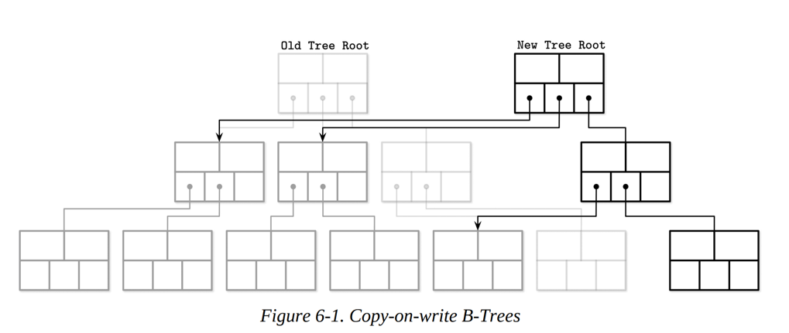
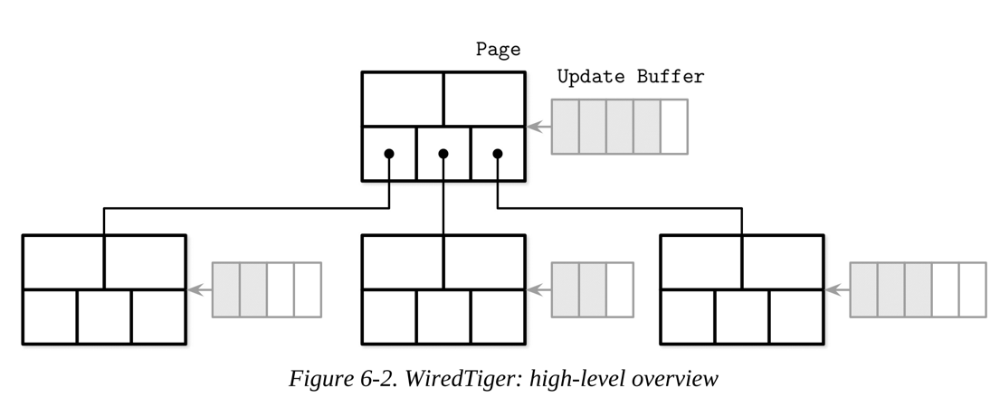
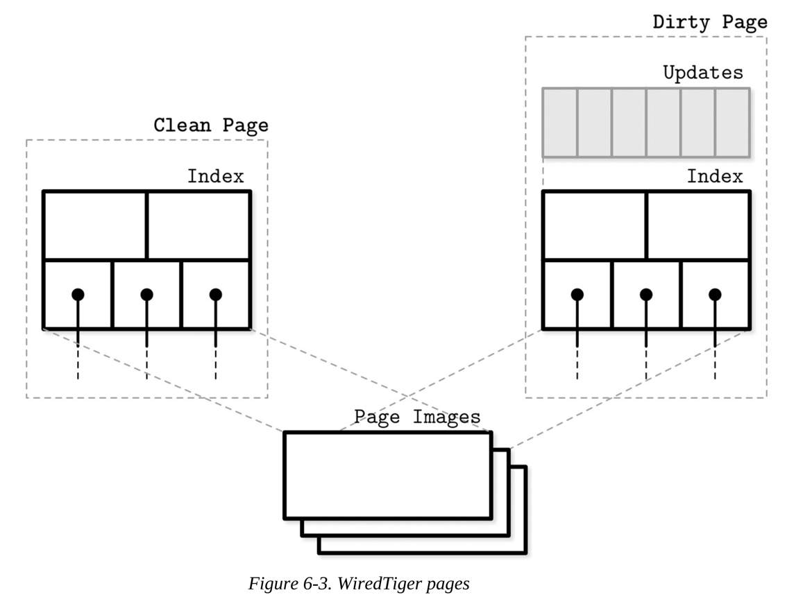
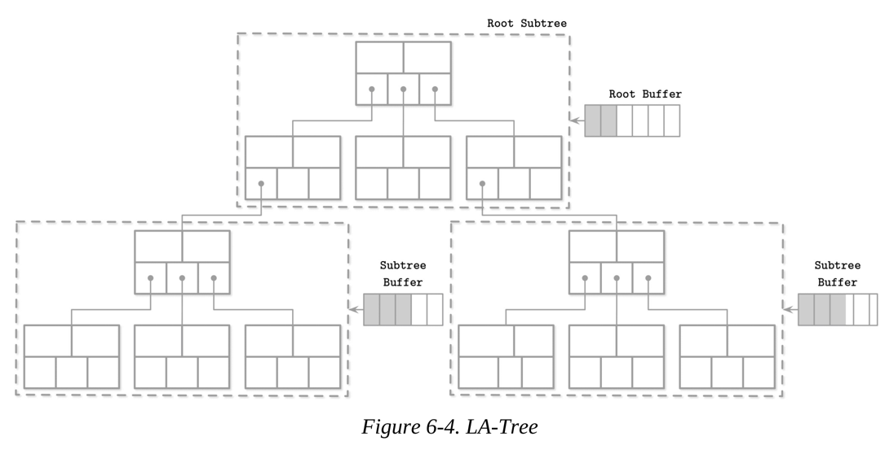
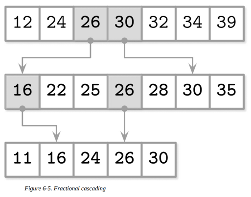
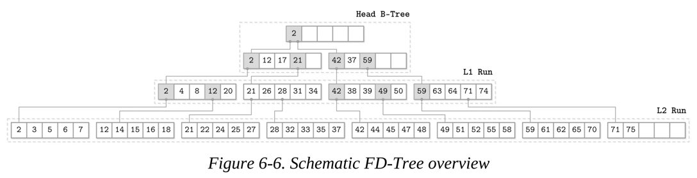
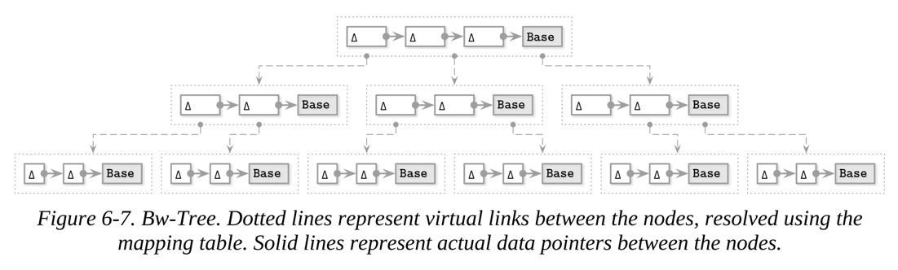
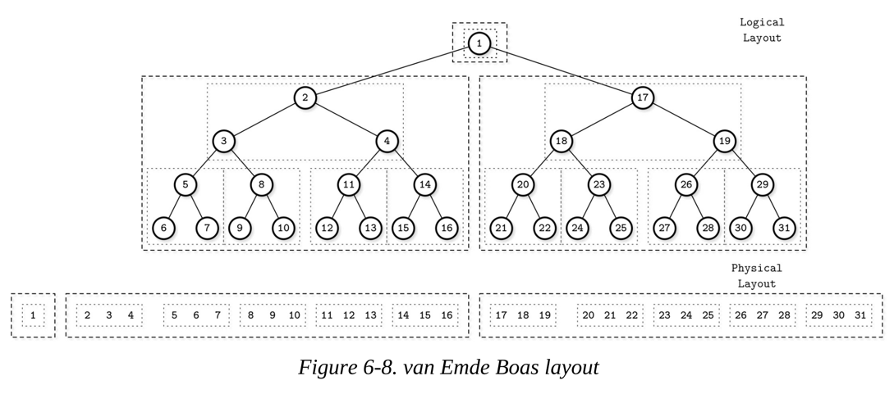
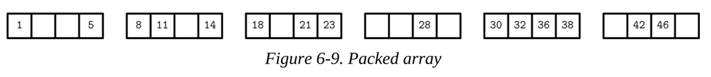

6장 - B-Tree 변형 (B-Tree Variants)
날짜: 2026-03-15
전통적인 B-Tree는 HDD(하드디스크) 환경에 최적화된 자료구조입니다. 하지만 SSD의 등장, 멀티코어 CPU의 확산은 B-Tree에게 새로운 변화를 요구했습니다. 5가지 변형 구조를 통해 데이터베이스 엔진이 어떻게 하드웨어의 한계를 극복하는지 정리합니다.
1. Copy-on-Write (CoW) B-Tree
"데이터를 수정하지 말고, 새로운 페이지에 복제하라"
- 동작 (Path Copying): 리프 노드 수정 시 해당 노드부터 루트까지의 모든 경로를 새로 생성합니다.
- 장점:
- Lock-free Read: 읽기 트랜잭션은 이전 루트를, 쓰기는 새 루트를 작업하므로 상호 간섭이 없습니다.
- Atomic Commit: 루트 포인터만 교체하면 커밋이 완료되어 시스템 안정성이 높습니다.
- 단점: 단일 키 수정에도 여러 페이지를 써야 하는 쓰기 증폭(Write Amplification)이 발생합니다.
사용 예: LMDB, ZFS, WiredTiger(Checkpoint 시)
2. Lazy / Buffered B-Tree
"리프 노드까지 내려가지 말고 버퍼에 모아서 처리하라"
- 동작: 내부 노드에 업데이트 버퍼를 두어 변경 사항을 임시 저장합니다.
- 전파 (Push-down): 버퍼가 가득 차면 하위 노드로 한꺼번에 배치(Batch) 업데이트를 수행합니다.
- 특징: 랜덤 쓰기를 배치 쓰기로 전환하여 I/O 효율을 높이지만, 읽기 시 버퍼를 매번 확인해야 하므로 읽기 성능은 다소 저하됩니다.
3. FD-Tree (Flash-Disk Tree)
"SSD의 랜덤 쓰기 문제를 순차 쓰기로 해결하라"
- 구조: 여러 레벨의 정렬된 런(Run)으로 구성되며, 로그 구조(Log-structured) 방식을 취합니다.
- Fractional Cascading: 하위 레벨의 대표 키들을 상위 레벨에 미리 복사해 두어, 레벨 이동 시 탐색 범위를 즉시 좁혀주는 '가교' 역할을 합니다.
4. Bw-Tree (Buzzword Tree)
"매핑 테이블과 델타 체인을 이용한 Lock-free 트리"
- Mapping Table: 페이지 ID와 실제 주소를 분리하는 간접 계층입니다. 자식 노드 주소가 바뀌어도 부모 노드를 수정할 필요가 없습니다.
- Delta Chains: 페이지를 직접 수정하는 대신, 변경 내용(Delta)을 기존 페이지 앞에 체인처럼 연결합니다.
- Consolidation: 체인이 길어지면 새로운 베이스 페이지로 합쳐서 탐색 성능을 유지합니다.
5. Cache-oblivious B-Tree
"하드웨어 사양을 몰라도 최적의 캐시 효율을 보장하라"
- vEB(van Emde Boas) Layout: 트리를 삼각형 모양의 서브트리로 재귀적으로 분할하여 메모리에 연속 배치합니다.
- 장점: CPU 캐시(L1, L2, L3) 크기에 상관없이 탐색 시 발생하는 캐시 미스를 수학적으로 최소화합니다.
6. 핵심 요약 및 비교
| 모델 |
주안점 |
핵심 기술 |
| CoW |
안정성 & 스냅샷 |
경로 복사 (Path Copying) |
| Lazy |
쓰기 처리량 증대 |
내부 노드 버퍼링 |
| FD-Tree |
SSD 수명 & 성능 |
계층형 병합 + Fractional Cascading |
| Bw-Tree |
멀티코어 병렬성 |
Mapping Table + Delta Chains |
| Cache-oblivious |
캐시 효율성 |
van Emde Boas Layout |
📝 스터디 핵심 질문지 (Self-Check)
Q1. 구조 이해
- Bw-Tree에서 Mapping Table이 부모 노드의 수정을 방지하는 원리는 무엇인가요?
- CoW 방식이 MVCC(다중 버전 동시성 제어) 구현에 유리한 이유는 무엇인가요?
Q2. 성능 트레이드 오프
- Lazy B-Tree에서 쓰기 성능을 높였을 때, 읽기(Read) 경로에서 발생하는 추가 비용은 무엇인가요?
- FD-Tree에서 Fractional Cascading이 없다면 탐색 성능이 어떻게 저하될까요?
Q3. 실무 및 하드웨어 적용
- SSD 환경에서 FD-Tree가 전통적인 B-Tree보다 유리한 물리적인 이유는 무엇인가요?
- Bw-Tree의 Delta Chain이 무한히 길어지지 않게 관리하는 기법은 무엇인가요?








